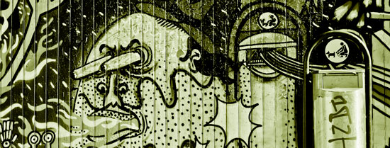

Nyheter
Vad händer med kvinnofrids- arbetet i Malmö?

Kvinnofridsarbetet ska stärkas så att det även omfattar papperslösa kvinnor. I förhandlingar med S och Mp när vi bildade majoritet i Malmö var detta en av de frågor som Vänsterpartiet drev igenom. Nu startar dialogen med...
läs mer
Till dig som är papperslös

Har du sett någonting på hemsidan som du vill veta mer om? Vill du komma i kontakt med någon av de som är med och erbjuder en fristad för papperslösa? Kontakta för mer information.
Vad saknar du i din vardag? Har du fler idéer, förslag eller tips på verksamheter som skulle behöva göras tillgängliga för papperslösa? Kontakta oss och berätta, dina erfarenheter behövs för att Malmö ska kunna bli en stad för alla.
Vill du vara med och engagera dig i Malmö Fristad för Papperslösa? Skicka ett mail till
Malmö för alla
I Malmö lever många personer som saknar uppehållstillstånd och därför får sina liv begränsade på olika sätt i vardagen. Att personer som inte fått uppehållstillstånd väljer att stanna i Sverige istället för att låta sig utvisas gör inte att deras behov och drömmar skiljer sig från andras. Vi vill att alla Malmöbor ska ha tillgång till det som staden har att erbjuda. Därför är vi med och erbjuder en fristad för papperslösa!
Anslut er
ChecklistaGoda Exempel
Gå med